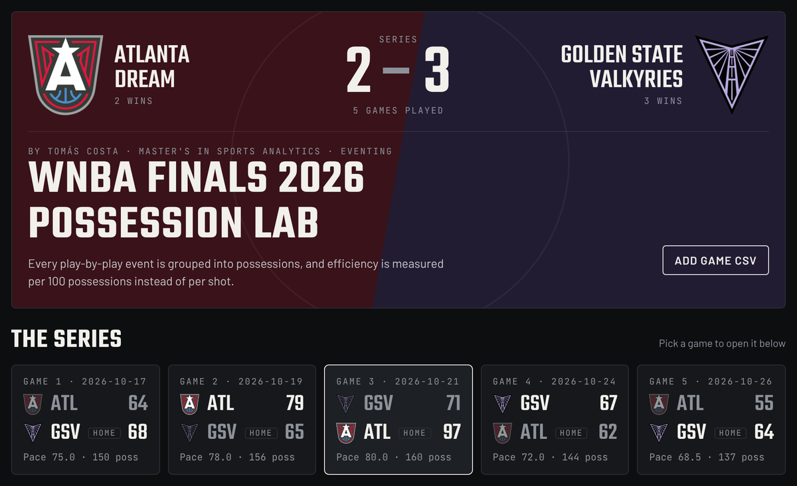
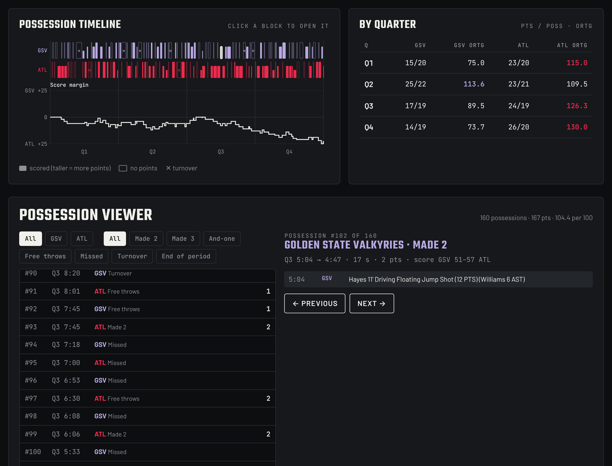
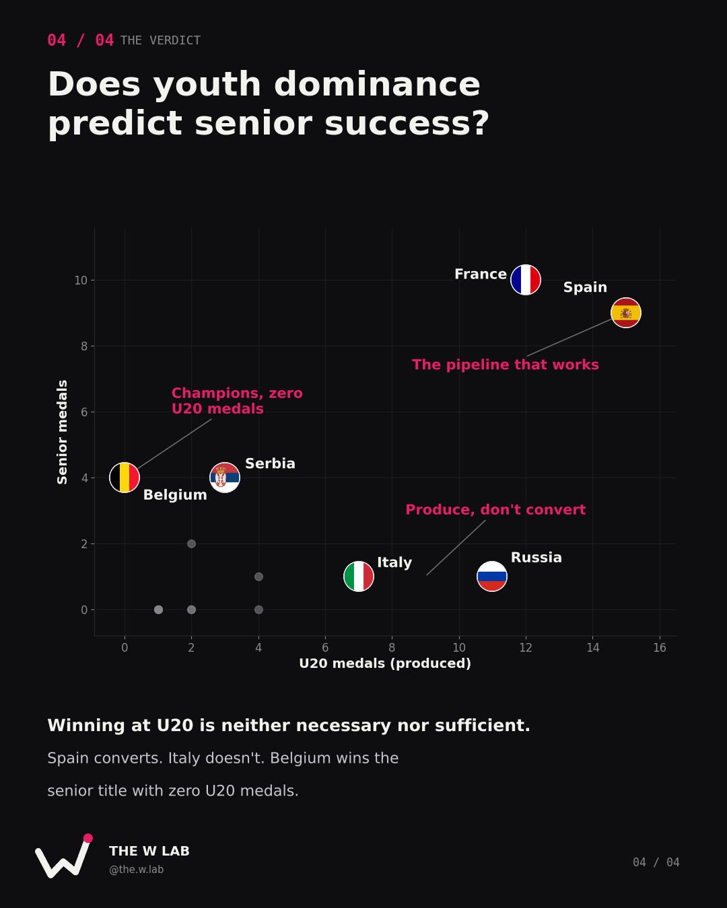

We Built a Possession Lab for the WNBA Finals — and It Says Pace Decides the Series
An interactive tool that rebuilds every possession of Dream vs Valkyries from the official play-by-play. After 610 possessions, one number keeps deciding a 2–2 series: pace.
DREAM
VALKYRIES
Golden State's record when the pace stays below 76 possessions per 40 minutes. Above it, Atlanta is 2–0.
Built in the lab
Interactive tools you can open and explore yourself. Every number comes from official data.

WNBA Finals Possession Lab
- Every possession of the Finals, rebuilt event by event
- Offensive and defensive efficiency per 100 possessions, and pace
- Possession timeline, efficiency by quarter and a possession viewer
Latest deep dives
We Built a Possession Lab for the WNBA Finals — and It Says Pace Decides the Series
610 possessions, one number that keeps deciding a 2–2 series.

Produced, Not Promised: What 25 Years of U20 Medals Say About Senior Success
Does dominating Europe's youth game predict anything at senior level?

Scoring a Lot Isn't Scoring Well
What True Shooting % reveals about the WNBA's top 10 scorers in 2026.
Three stats worth knowing
Points per 100 possessions between Atlanta's best and worst offensive game in the Finals.
WNBA Finals →Share of every U20 Women's EuroBasket ever held that Spain has won: 10 titles in 22 editions.
U20 pipeline →Kelsey Plum's True Shooting — the best efficiency among the WNBA's top 10 scorers in 2026.
True Shooting →About The W Lab
Women's basketball, decoded by the numbers. The W Lab is run by Tomás Costa, a Sports Analytics master's student in Madrid. Analysis, data tools and deep dives on the WNBA and European basketball — the stats the highlights miss.